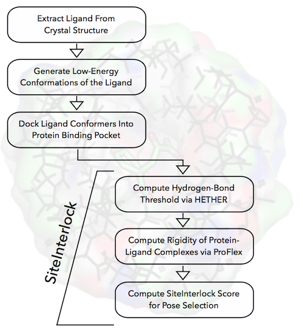
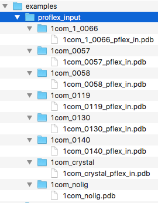
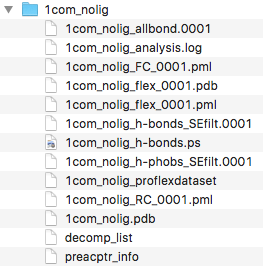
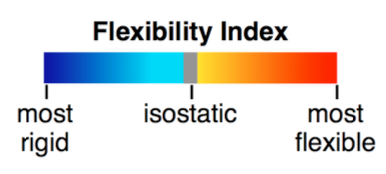
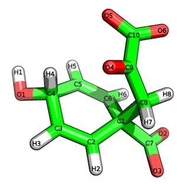
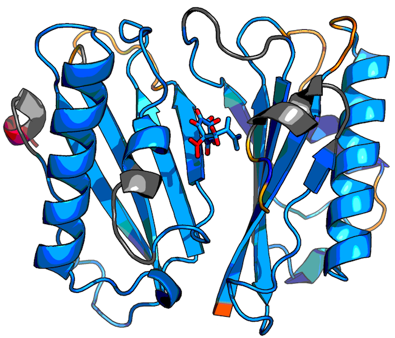
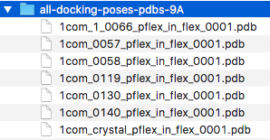

User Guide Overview
This guide shows you how to use siteinterlock in a typical scoring and pose
selection in a typical docking study. The examples used in this guide are based
on a small re-docking study of the protein-ligand crystal complex of
monofunctional chorismate mutase and prephenic acid (PDB code:
1com
[1]).
The files we will be working with in this tutorial are located in the
examples/ subdirectory
of the siteinterlock package.
The subsequent flowchart highlights a typical workflow of a re-docking study
via siteinterlock, and this guide assumes that you already completed steps
1-3 and prepared protein-ligand docking poses using your preferred docking
tool; for example, AutoDock Vina [2].
In the following sections, we will only consider a representative subset of
docking poses of 1com for clarity when illustrating the use of the
siteinterlock package for near-native binding pose selection (steps 3-6).
These docking poses used in this guide were previously generated via
OpenEye OMEGA2 [3] and
MSU SLIDE
[4].

1 - Organizing Protein Docking Poses as PDB files
In this first section, we will prepare our docking poses for rigidity analysis in ProFlex 5. We recommend you to organize the docking poses for re-scoring in a directory structure similar to the one that is shown in the screenshot below.

As illustrated in the preceding figure, we will create a separate directory
that contains one docking pose each. These PDB files will later serve as
inputs to ProFlex. Each input file should contain the protein structure in
PDB-file format
including the docked ligand.
Please make sure that the protein-ligand complexes in these PDB files are protonated,
which is required by ProFlex. In addition, we need to prepare
a "ligand-free" structure of the protein, which we labeled 1com_nolig.
If you have further questions about the required file format,
please take a look at the "1com" example files, which are located
in the examples/proflex_input/ subdirectory.
2 - Determining a Reasonable Energy Cut-Off for Hydrogen Bonds in ProFlex
Before we analyze the rigidity of the docking poses via ProFlex, we use HETHER (Hydrogen-bond Energy ThresHold Estimator for Rigidity analysis) to select the optimal hydrogen-bond energy value for ProFlex analysis. Based on the ligand-free crystal structure, HETHER determines which salt bridges and hydrogen bonds will be included in the atomic interaction network. For more details about the HETHER algorithm, please refer to the SiteInterlock research publication [6]. Using HETHER can be understood as a calibration step, since protein structures are being solved in different solvents, at different temperatures and pressures. Please note that we use the ligand-free structure for the HETHER analysis, to represent the real-world case of a docking study where the protein-ligand crystal complex may not be available.
Before we can run the HETHER analysis, though, we need to run ProFlex's
'hydrogen-dilution' analysis;
we navigate to the examples/proflex_input/1com_nolig
directory and run ProFlex via the following command:
proflex -h 1com_nolig.pdb
When ProFlex prompts us with questions, we use the default options for analyzing the rigidity of this structure. When the following analysis menu comes up:
ANALYSIS MENU
What would you like to perform:
(1) Flexibility and rigidity analysis
(2) Hydrogen bond dilution
we enter 2 and hit the <Enter> button to select hydrogen bond
dilution as the type of analysis. When the following next menu appears
Which hydrogen bond dilution analysis would you like?
(1) Standard hydrogen bond dilution, removing weakest H-bonds, one at a time
(2) Random dilution over all H-bonds.
NOTE: This option is *not* recommended;
It may be used to probe the influence of H-bond
density, as opposed to strength, on rigidity
we enter 1 and confirm via <Enter>, which will execute
a "Hydrogen bond dilution analysis." When the analysis finishes successfully,
we can inspect the results of the dilution analysis by opening the post
script image file 1com_nolig_h-bonds.ps that was created in the 1com_nolig
directory (Example output files are located in the
examples/proflex_output/hbdilute-1com_nolig/ subdirectory):

Finally, we can use HETHER to select the most appropriate energy threshold
for the hydrogen-bond network to use with ProfFlex for SiteInterlock analysis.
We execute the hether.py script from siteinterlock scripts directory and
provide two input files, the {add a line break
here so that the file name isn't split in the middle of a word}
1com_nolig_proflexdataset file and the decomp_list file, which were
both created via the hydrogen-dilution analysis. To run HETHER,
we execute the following command:
python scripts/proflex_hether.py \
--input1 examples/proflex_output/1com_nolig/1com_nolig_proflexdataset \
--input2 examples/proflex_output/1com_nolig/decomp_list
As a result, we should see the following output on our command line terminal:
# # SiteInterlock version 1.0.0 # Timestamp: 2016-08-19T19:36:47 # ============== HETHER results ============== Suggested energy threshold: -0.806 kcal/mol Number of rigid clusters: 4 Relative rigidity: 83.0%
The relative rigidity value measures the percentage of all C-alphas
in the protein that are in rigid regions. To save this information for our
records, we can copy this output it to a text or log file of choice.
More conveniently, we can use the redirect operator > of our
Linux/Unix shell to redirect outputs of siteinterlock scripts to files.
For example,
python scripts/proflex_hether.py \
--input1 examples/proflex_output/1com_nolig/1com_nolig_proflexdataset \
--input2 examples/proflex_output/1com_nolig/decomp_list\
> examples/proflex_output/1com_nolig/hether.log
We recommend using tee (if your shell environment supports it)
so that you can show the siteinterlock script outputs on your terminal
screen (stdout) and also save it to a log file (redirect)
without executing the same command twice:
python scripts/proflex_hether.py \
--input1 examples/proflex_output/1com_nolig/1com_nolig_proflexdataset \
--input2 examples/proflex_output/1com_nolig/decomp_list\
| tee examples/proflex_output/1com_nolig/hether.log
As we can see from the previous output, HETHER suggests an energy
threshold of -0.806 kcal/mol, which corresponds to the protein state
that is indicated by an black arrow in the following hydrogen-dilution
plot figure:

For more information about hydrogen-bond dilution analysis, please refer the supporting information section of the SiteInterlock research publication [6].
The last two lines of the hether.py output provide us with optional
information.
For instance, Number of rigid clusters: 4 tells us that
there are 4 rigid clusters at the given energy threshold, and that the
structure has a relative rigidity
value of 83%.
Optional but Encouraged: Visualizing Rigid and Flexible Clusters in PyMOL
In this section, we will walk through visualizing the rigid cluster composition via ProFlex in PyMOL using the energy threshold we determined in the previous section based on the ligand-free structure. This is strongly encouraged because it will tell you whether the energy value selected by HETHER is appropriate, resulting in a mostly rigid main chain with some residual flexibility that will be sensitive to native-like ligand interactions. Now, instead of running a "hydrogen-bond dilution analysis," we will perform a "flexibility and rigidity analysis" via ProFlex, which runs ProFlex for a single energy threshold rather than for all thresholds. Similar to our previous ProFlex run, we start the analysis by executing
proflex -h 1com_nolig.pdb
This time, when we are prompted to enter an energy cut-off,
we use the threshold suggested by HETHER instead of
the default setting and hit <Enter>:
Number of H-bonds remaining: 202
Number of H-phobic tethers remaining: 166
Filter on Hydrogen Bond Energy:
~~~~~~~~~~~~~~~~~~~~~~~~~~~~~~~
All current hydrogen bonds have energies between:
-9.8419 Kcal/Mol to 0.0226 Kcal/Mol
Enter a maximum acceptable hydrogen bond energy (in Kcal/Mol)
(-1.0 is a reasonable cutoff in general): -0.806
When the next menu comes up, we enter 1 and continue
by confirming your choice via the <Enter> button:
ANALYSIS MENU What would you like to perform: (1) Flexibility and rigidity analysis (2) Hydrogen bond dilution
After the flexibility analysis has completed, we should find
the following files in the 1com_nolig directory:

Next, we open the file 1com_nolig_flex_0001.pdb in PyMOL.
This PDB file represents the protein structure after the ProFlex analysis,
which we can use to visualize the predicted flexible, isostatic, and rigid
clusters according to the following color scale:

Now, we click on the "File" menu in PyMOL, select "Run" from the dropdown
menu, and open the scripts/pymol_proflex_color.pml.

We should now see the protein structure with its predicted flexible and rigid regions:

In this case, the energy level appears appropriate, resulting in a mostly rigid structure (dark blue to gray) with some flexible regions (yellow, orange and red). If the protein instead appeared mostly flexible, it could be indicative of unresolvable (by SiteInterlock) problems in the stereochemical quality of the protein coordinates being analyzed; see the discussion about checking protein stereochemistry in the Rigidity Analysis section of the Raschka et al. SiteInterlock paper in the References). Alternatively, in the rare case when the energy selected by HETHER is slightly too high, resulting in excessive flexibility, a less negative energy threshold could be manually selected based on viewing the hydrogen-bond dilution plot from ProFlex, as described in section 2 above.
3 - Analyzing Docking Poses via ProFlex
After we have computed a reasonable hydrogen-bond cut-off based on the
ligand-free protein structure in section 2, we can use this
suggested cut-off value for our ProFlex analysis of the docking poses.
ProFlex requires additional information about hydrogen-donor and acceptor
atoms for non-protein atoms. If you used MSU SLIDE for docking,
siteinterlock includes a script, slide_propmap.py, to obtain this
information from SLIDE's .pts (interaction points) file.
For instance, you can provide a MOL2 file of the ligand, prephenic acid (shown below):

and the .pts file of the docked ligand to slide-propmap.py:
python scripts/slide_propmap.py \
--input1 examples/slide-propmap/1com_crystal.mol2 \
--input2 examples/slide-propmap/1com_0.pts
The resulting output in this case should appear as follows:
# # SiteInterlock version 1.0.0 # Timestamp: 2016-08-19T20:15:54 # ================ PROPMAP results ================ C1 --> hydrophobic contact C3 --> hydrophobic contact C5 --> hydrophobic contact C8 --> hydrophobic contact O1 --> b [H-bond Donor and/or Acceptor] O2 --> a [H-bond Acceptor] O3 --> a [H-bond Acceptor] O4 --> a [H-bond Acceptor] O5 --> a [H-bond Acceptor] O6 --> a [H-bond Acceptor]
If you didn't use SLIDE for docking and don't have a chemistry-related background, we recommend you to either use a different tool to obtain the required hydrogen-bond donor and acceptor information for ligand atoms or consult with an organic chemist.
After we acquired the information about the ligand's hydrogen-bond donor
and acceptor atoms, we will run the ProFlex flexibility analysis on each
of the docking poses. For instance, to run the ProFlex analysis on the
crystal structure in examples/proflex_input/proflex_input/1com_crystal,
execute proflex -h 1com_crystal_pflex_in.pdb in the respective directory.
When we are prompted to enter donor and acceptor information,
we provide the above information from PropMap, as shown in the example below:
---------------------------------------------------------
Identification of H-bond Donors, Acceptors etc.
(d) H-bond Donor
(a) H-bond Acceptor
(b) Both H-bond Donor and H-bond Acceptor
(c) Charged Donor
(e) Charged Acceptor
(n) None
---------------------------------------------------------
Enter (a,b,c,d,e or n) for the following atoms.
Atom# Atom Res Res# Chain
3755 O1 <0> 1 Enter (a,b,c,d,e or n): b
3757 O2 <0> 1 Enter (a,b,c,d,e or n): a
3759 O3 <0> 1 Enter (a,b,c,d,e or n): a
3761 O4 <0> 1 Enter (a,b,c,d,e or n): a
3763 O5 <0> 1 Enter (a,b,c,d,e or n): a
3765 O6 <0> 1 Enter (a,b,c,d,e or n): a
When we are prompted to enter an energy threshold for hydrogen bonds,
we provide the value that we obtained from the ligand-free structure
(1com_nolig) that we computed via HETHER in section 2.
We then run the flexibility analysis by entering 1
when the following ProFlex prompt comes up:
ANALYSIS MENU
What would you like to perform:
(1) Flexibility and rigidity analysis
(2) Hydrogen bond dilution
After running the ProFlex flexibility analysis individually
(in separate ProFlex runs) on each of the 6 docking poses and
the crystal structure, we should now have 7 ProFlex output PDB
files that we can collect in a single directory for convenience
(example files are provided in
examples/proflex_output/all-docking-poses-pdbs):

Optionally, we can visualize the results of the flexibility analysis
of the protein with ligand by following the instructions described
in the previous section
Optional but Encouraged: Visualizing Rigid and Flexible Clusters in PyMOL.
The flexible and rigid clusters of the protein-ligand structure
in
1com_0057_pflex_in_flex_0001.pdb are shown as an example below:

Blue regions represent rigid parts of the structure, gray regions represent isostatic (just barely rigid) parts, and yellow, orange, and red regions indicate increasingly flexible regions according to the following color scale:
Optional: Visualizing H-bond Interactions between Proteins and Ligands
We can use one of the siteinterlock utilities to visualize the
hydrogen bond interactions in the current docking pose as deduced
via ProFlex. First, we need to install the pymol_bondvis-plugin.py
provided in the siteinterlock's scripts directory. As shown in
the two figures below, we click on the "Manage Plugins"
(if you have it enabled in your PyMOL version) and select the plugin
script mentioned above to install the plugin.


Then, we need to restart the PyMOL application.
To obtain the relevant hydrogen-bond information that the above-mentioned plugin requires, run
python scripts/proflex_bondviz.py \
-i examples/proflex_output/1com_0057/1com_0057_pflex_in_proflexdataset \
-b hbonds
which will produce the following output on your command line screen:
Atom#1 Atom#2 1951 3761 1949 3755 3269 3759 3566 3755 3266 3761 1185 3765
and we save these results as a text file, for example, hbonds.txt.
Now, we reopen PyMOL, rename
1com_0057_pflex_in_proflexdataset to 1com_0057_pflex_in_proflexdataset.pdb
and open this PDB file in
the current PyMOL session. Next, select the BondViz plugin
from PyMOL's plugin menu, and select the hbonds.txt
file that was just created:

Then, open the PDB file that we previously used as input to ProFlex,
for example,
1com_0057_pflex_in.pdb, in order to visualize the
hydrogen-bond network between the protein and the docked ligand:


4 - SiteInterlock Scoring and Pose Selection
After working through the preparation steps described in sections 1-3, we can use the ProFlex output files to compute the SiteInterlock ranking scores for pose selection.
First, we need to extract substructures of the protein-ligand complexes
that contain the atoms of the ligand itself and all protein atoms within
a 9-Angstrom radius of the ligand's heavy atoms. To accomplish this,
we execute the get-substructures.py
script from siteinterlock's script directory as follows:
python scripts/get-substructures.py \
--input examples/proflex_output/all-docking-poses-pdbs/ \
--output examples/proflex_output/all-docking-poses-pdbs-9A/ \
--ligand "<0>,,1" \
--apply_to_dir
where the directory examples/proflex_output/all-docking-poses-pdbs/
contains the ProFlex output PDB files, as shown in the screenshot at
the end of section 3. Via the --ligand flag, we specify the residue
name, chain ID, and residue number of the docked ligand in the PDB file.
In this particular case (due to a ligand processing tool we used),
the 3-letter ligand residue name for the prephenic acid was assigned as <0>
in the pdb file. (More typically, prephenic acid would have the ligand name
PRE in a PDB file; see http://ligand-expo.rcsb.org). The input format for
the --ligand format is ResidueName,ChainID,ResidueNumber. However,
in this particular case, (again, due to a ligand processing tool we used)
does not have a chain ID assigned so that we leave the ChainID value
empty. For example, if our ligand of interested was assigned the
chain ID "A", we would have written
--ligand "<0>,A,1".
Finally, via the --apply_to_dir flag, we specify that we want to apply
the scripts/get-substructures.py to all structures in the input directory
so that we don't have to run the same script multiple times -- for instance,
running it on each individual PDB file.
After running the script as described above, we should now find the following files in the specified output directory:

When we open these files in PyMOL, we should see the ligand and the respective 9 Angstrom substructure of the protein -- the protein atoms that fall within 9 Angstrom of the ligand's heavy atoms:

This is another excellent validation step to do to make sure that the
right binding site region of the protein has been selected for the ligand
of interest. After these substructures have been obtained, run the
siteinterlock-score.py script providing the substructure directory as input:
python scripts/siteinterlock-score.py \
-i examples/proflex_output/all-docking-poses-pdbs-9A/
As a result, we should now see the following SiteInterlock scores on your command line terminal:
# # SiteInterlock version 1.0.0 # Timestamp: 2016-08-19T21:56:56 # # ============================== # SiteInterlock Scoring Results # ============================== Filename,SiteInterlock_Score 1com_0057_pflex_in_flex_0001.pdb,-1.094 1com_crystal_pflex_in_flex_0001.pdb,-1.053 1com_0140_pflex_in_flex_0001.pdb,-0.357 1com_0058_pflex_in_flex_0001.pdb,-0.087 1com_0119_pflex_in_flex_0001.pdb,-0.070 1com_1_0066_pflex_in_flex_0001.pdb,0.776 1com_0130_pflex_in_flex_0001.pdb,1.885
These results are sorted by ascending order, and the lowest, most negative value represents the best prediction. Please also note that the SiteInterlock score is a score for ranking and pose selection. Due to the normalization procedure that is required for combining protein and ligand information, the absolute values (not their relative ranking order) of the scores depend on the number of docking poses.
Since this tutorial focuses on a protein with a crystallographically determined
orientation of the ligand, we can compare the positional accuracy of the
SiteInterlock-selected pose with the crystallographic pose. We do this by
computing the root mean square deviation (RMSD) of atomic positions between
each docking pose of prephenic acid and the crystal pose, 1com_crystal.
In this example we performed the RMSD calculation using the rmsd module of
the OEChem Toolkit (OpenEye Scientific Software, Santa Fe, NM;
http://www.eyesopen.com). The following figure shows SiteInterlock scores
of the docking poses plotted as a function of their RMSD values relative to
the crystallographic pose. The plot indicates that the docking with the
most negative SiteInterlock score has a low (good) RMSD value of 0.4 A
relative to the correct, crystallographic position (as expected), that
the crystallographic binding pose has a very similar, favorable
SiteInterlock score, and that higher-RMSD binding poses typically
have higher/worse SiteInterlock scores.

We hope you find SiteInterlock useful in your own research!
References
- Chook, Y. M., Gray, J. V., Ke, H., & Lipscomb, W. N. (1994). The monofunctional chorismate mutase from Bacillus subtilis: structure determination of chorismate mutase and its complexes with a transition state analog and prephenate, and implications for the mechanism of the enzymatic reaction. Journal of molecular biology, 240(5), 476-500.
- Hawkins, P. C., Skillman, A. G., Warren, G. L., Ellingson, B. A., & Stahl, M. T. (2010). Conformer generation with OMEGA: algorithm and validation using high quality structures from the Protein Databank and Cambridge Structural Database. Journal of chemical information and modeling, 50(4), 572-584.
- Trott, O., & Olson, A. J. (2010). AutoDock Vina: improving the speed and accuracy of docking with a new scoring function, efficient optimization, and multithreading. Journal of computational chemistry, 31(2), 455-461.
- Zavodszky, M. I., & Kuhn, L. A. (2005). Side‐chain flexibility in protein–ligand binding: The minimal rotation hypothesis. Protein Science, 14(4), 1104-1114.
- Jacobs, D. J., Rader, A. J., Kuhn, L. A., & Thorpe, M. F. (2001). Protein flexibility predictions using graph theory. Proteins: Structure, Function, and Bioinformatics, 44(2), 150-165.
- Raschka, S., Bemister-Buffington, J., & Kuhn, L. A. (2016). "Detecting the Native Ligand Orientation by Interfacial Rigidity: SiteInterlock." Proteins: Structure, Function, and Bioinformatics, 85 (10).